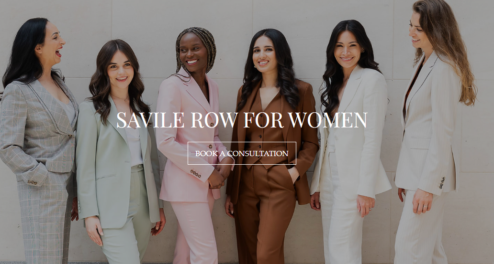
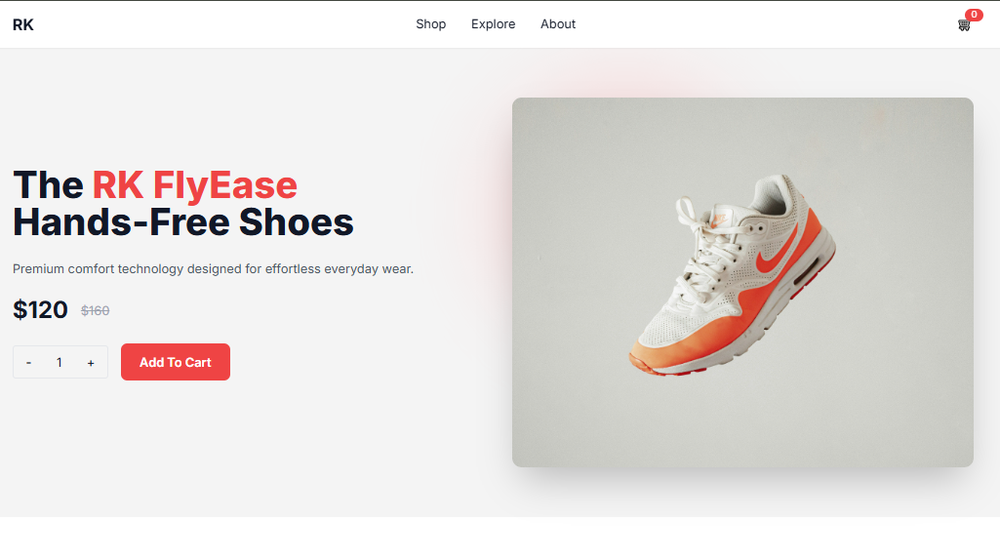
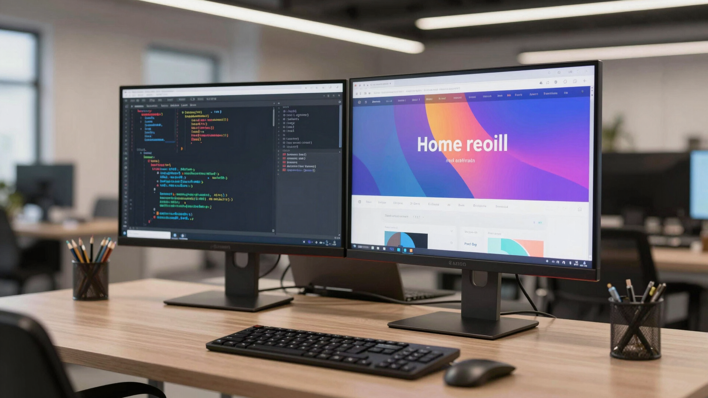

Portfolio
Some Of My Recent Works

WebFLow Web Design
Web Design

Finance Dashboard
UI/UX Design

Corporate Website
Web Design

Shopping Cart
Web Development
Hi, I'm Rafiul , Specialized in WordPress, Webflow, and Front-End Development. Turning UI/UX designs into responsive, scalable, and optimized websites.
Front-End Developer specializing in responsive website development using modern technologies. Experienced in WordPress, Webflow, and converting UI/UX designs into scalable, production-ready solutions.
Strong foundation in modern web development, focused on building responsive, scalable, and performance-optimized websites.

Completed my Higher Secondary education with a focus on Arts and Humanities. Developed strong communication, critical thinking, and analytical skills while actively participating in various extracurricular programs.
Completed my Secondary School Certificate majoring in Science. Built a strong foundational understanding of mathematics and core sciences, which sparked my analytical and problem-solving mindset.
Assisted senior developers in building and maintaining responsive websites. Gained hands-on experience with modern web technologies and frameworks while participating in daily stand-ups and bug fixing.
Designed user-centric interfaces for web and mobile applications. Created wireframes, prototypes, and high-fidelity mockups, ensuring seamless user experiences and collaborating closely with the development team.

Web Design
UI/UX Design
Web Design

Web Development